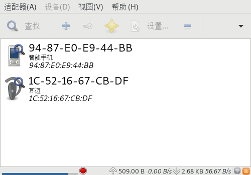

使用blueman连接蓝牙设备
之前写过一篇博客介绍如何通过命令行来连接蓝牙耳机,但是这个过程显得很繁琐。
事实上, blueman 给我们提供了一个GUI界面来方便地让我们连接蓝牙设备。
查看蓝牙状态
sudo rfkill
ID TYPE DEVICE SOFT HARD 0 wlan phy0 unblocked unblocked 1 bluetooth hci0 unblocked unblocked
确定
bluetooth中SOFT和HARD都是unblocked若不是，则执行
sudo rfkill unblock bluetooth
安装blueman
sudo pacman -S blueman --noconfirm
looking for conflicting packages... Packages (1) blueman-2.0.5-2 Total Installed Size: 5.31 MiB Net Upgrade Size: 0.00 MiB :: Proceed with installation? [Y/n] (0/1) checking keys in keyring [----------------------] 0% (1/1) checking keys in keyring [######################] 100% (0/1) checking package integrity [----------------------] 0% (1/1) checking package integrity [######################] 100% (0/1) loading package files [----------------------] 0% (1/1) loading package files [######################] 100% (0/1) checking for file conflicts [----------------------] 0% (1/1) checking for file conflicts [######################] 100% (0/1) checking available disk space [----------------------] 0% (1/1) checking available disk space [######################] 100% :: Processing package changes... (1/1) reinstalling blueman [----------------------] 0% (1/1) reinstalling blueman [#######---------------] 36% (1/1) reinstalling blueman [######################] 100% :: Running post-transaction hooks... (1/4) Compiling GSettings XML schema files... (2/4) Updating icon theme caches... (3/4) Arming ConditionNeedsUpdate... (4/4) Updating the desktop file MIME type cache...
检查bluetooth service是否启动
sudo systemctl status bluetooth.service
● bluetooth.service - Bluetooth service Loaded: loaded (/usr/lib/systemd/system/bluetooth.service; disabled; vendor preset: disabled) Active: active (running) since Sat 2018-05-19 07:57:38 CST; 19min ago Docs: man:bluetoothd(8) Main PID: 28874 (bluetoothd) Status: "Running" Tasks: 1 (limit: 4636) Memory: 1.8M CGroup: /system.slice/bluetooth.service └─28874 /usr/lib/bluetooth/bluetoothd May 19 07:57:37 X61 systemd[1]: Starting Bluetooth service... May 19 07:57:37 X61 bluetoothd[28874]: Bluetooth daemon 5.49 May 19 07:57:38 X61 systemd[1]: Started Bluetooth service. May 19 07:57:38 X61 bluetoothd[28874]: Starting SDP server May 19 07:57:38 X61 bluetoothd[28874]: Bluetooth management interface 1.14 …ized Hint: Some lines were ellipsized, use -l to show in full.若bluetooth.service没有启动，则启动它
sudo systemctl start bluetooth.service
启动blueman
在终端执行
blueman-applet
就会发现任务栏上出现一个蓝牙的图标了
点击蓝牙图表之后选择
设备就能搜索蓝牙设备了 